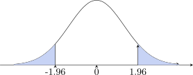

3 Statistical Hypothesis Testing
Deals with proving whether the given statement is true or false.
\(H_0:\) This is a \(+ve\) statement which needs to be proved right or wrong (Null hypothesis).
Example
Children watch TV for 3 hours
\(H_0:\) children in Zambia watch TV for 3 hours per week.
\(H_0: \mu =3\)
\(H_0:\) There is no difference in performance between boys and girls.
\(H_0: \mu _1=\mu _2\).
\(H_1:\) Is called alternative hypothesis. [Negative Statement]
Example
\(H_1 : \mu \neq 3\)
\(H_1: \mu _1 \neq \mu _2\)
The Four Steps of Hypothesis Testing
- Set up the hypothesis
\(H_0:\) Null hypothesis which is \(+ve\) statement to be proved.
\(H_1:\) Alternative hypothesis - Set up the level of significance \(\alpha =\hspace {0.3cm}\text {level of significance}\)
-
Test statistic
We calculate the statistic and possible statistic are- \(\displaystyle {Z=\frac {\overline {X}-\mu }{\text {S.e}}=\frac {\overline {X}-\mu }{\sigma /\sqrt {n}}\hspace {1cm}\text {or}\hspace {1cm}\frac {\overline {X}-\mu }{S/\sqrt {n-1}}\hspace {1cm}\text {or}\hspace {1cm}\frac {\overline {X}-\mu }{\widehat {S}/\sqrt {n}}}\)
-
\(\displaystyle {Z=\frac {\overline {X}-\mu }{\sigma /\sqrt {n}}\hspace {0.6cm}\text {for}\hspace {0.3cm}n= \text {large},\hspace {0.3cm} \sigma = \text {known}}\)
\(\displaystyle {t_{n-1}=\frac {\overline {X}-\mu }{\sigma /\sqrt {n}}\hspace {0.6cm}\text {for}\hspace {0.3cm} n<30,\hspace {0.3cm} \sigma =\text {unknown}}\)
\(\displaystyle {t_{n-1}=\frac {\overline {X}-\mu }{\widehat {S}/\sqrt {n}}\hspace {1cm}\text {and}\hspace {1cm}t_{n-1}=\frac {\overline {X}-\mu }{\sigma /\sqrt {n}}}\)
-
Difference between two means.
When \(n\) is large and \(\sigma _1\) and \(\sigma _2\) are known. \[Z=\frac {(\overline {X}_1-\overline {X}_2)-(\mu _1-\mu _2)}{\sqrt {\dfrac {\sigma ^2_1}{n_1}+\dfrac {\sigma ^2_2}{n_2}}},\hspace {2cm} Z=\frac {\overline {X}_1-\overline {X}_2}{\sqrt {\dfrac {\sigma ^2_1}{n_1}+\dfrac {\sigma ^2_2}{n_2}}}\]
\[t_{n_1+n_2-2}=\frac {\overline {X}_1-\overline {X}_2}{\sqrt {\dfrac {n_1S^2_1+n_2S^2_2}{n_1+n_2-2}\Bigg (\dfrac {1}{n_1}+\dfrac {1}{n_2}\Bigg )}}\hspace {0.6cm}n<30,\hspace {0.4cm}\sigma = \text {unknown}\]
Paired Test: \(\hspace {0.5cm} \displaystyle {t_{n-1}=\frac {\mu -\overline {d}}{\dfrac {\text {SD}}{\sqrt {n-1}}}}\)
\(\text {Significance of a proportion}\hspace {0.4cm} \displaystyle {Z=\frac {\widehat {P}-P}{\sqrt {\dfrac {P(1-P)}{n}}}}\hspace {0.3cm}\text {for large sample size.}\)
- \(\displaystyle {Z=\frac {\overline {X}-\mu }{\text {S.e}}=\frac {\overline {X}-\mu }{\sigma /\sqrt {n}}\hspace {1cm}\text {or}\hspace {1cm}\frac {\overline {X}-\mu }{S/\sqrt {n-1}}\hspace {1cm}\text {or}\hspace {1cm}\frac {\overline {X}-\mu }{\widehat {S}/\sqrt {n}}}\)
-
Critical Region

\(Z_{\alpha /2}\) undirected hypothesis tests, two tailed test \(\alpha =5\%\).
Interpretation: If the statistic \(Z\) lie in the C.R this means we reject \(H_0\) and accept \(H_1\). That means \(H_1\) is
true.
If the statistic \(Z\) lies in the acceptance region that means we accept \(H_0\) and reject \(H_1\). That means \(H_0\) is
true.
We can use the P-value for interpretation given statistic \(\alpha =0.025\) , \(Z=2.13\)

\begin {align*} P(Z>2.13) &=1-P(Z\leq 2.13)=1-0.9834\\ &=0.016 \end {align*}
- If the P-value is smaller than the level of significance \(\alpha /2=0.025\). That means we reject \(H_0\) and Accept \(H_1\).
- If the P-value is grater than the level of significance we Accept \(H_0\) and reject \(H_1\).
Directed Hypothesis Test
One tailed test
\(H_0:\mu =a\hspace {1cm} H_0:\mu _1=\mu _2\)
\(H_1:\mu >a\hspace {1cm} H_1:\mu _1>\mu _2\)
\(H_1:\mu <a\hspace {1cm} H_1:\mu _1<\mu _2\)
Example
Let \(n=9\), \(\overline {X}=1003\)g, \(\mu =1 000\)g, s.d = 5g
-
- Set up the hypothesis
\(H_0:\) The machine is correctly set.
\(H_1:\) The machine is not correctly set.
or
\(H_0: \mu =\) 1 000g
\(H_1: \mu \neq \) 1 000g
- Set up the level of significance \(\alpha =5\%\)
- Test statistic
This is a small sample size since \(n=9<30\) and our S.E \(=\dfrac {\sigma }{\sqrt {n}}\). \begin {align*} t &=\frac {\overline {X}-\mu }{\dfrac {\sigma }{\sqrt {n}}}=\frac {1003-1000}{5/\sqrt {9}}=\frac {3}{5}\times 3\\\\ \implies \hspace {0.6cm} t&=1.8\\\\ t_{8,0.025}&=2.306\\ \end {align*} -
Critical region

Interpretation: our statistic \(t=1.8\) lies in the acceptance region. That means we accept \(H_0\) and reject \(H_1\). That is the machine is correctly set up the level of significance set at \(\alpha =5\%\).
- Set up the hypothesis
-
\(H_0: \mu =\) 1 000g
\(H_1:\mu >\) 1 000g
\(\alpha =5\%\)
\(t=1.8\)\(t=1.8\) which is less than \(t_{8,0.05}=1.860\implies t\) lies in the acceptance region i.e Accept \(H_0\) and reject \(H_1\).
\(\implies \) This machine is correctly set.
Example
Let \(\hspace {0.3cm} \overline {X}=64,\hspace {0.4cm} \mu =60,\hspace {0.4cm} S=6.3,\hspace {0.4cm} n=50\)
- Set up the hypothesis
\(H_0:\mu =60\)
\(H_1:\mu >60\)
- Set up the level of significance at \(\alpha =1\%\)
- Test statistic \[n=50>30\hspace {0.5cm}\implies \hspace {0.5cm}\text {large sample size}\] \begin {align*} Z &=\frac {\overline {X}-\mu }{\dfrac {\sigma }{\sqrt {n-1}}}=\frac {64-60}{6.3/\sqrt {49}}=\frac {4\times 7}{6.3}=\frac {28}{6.3}\\\\ \implies \hspace {0.6cm} Z &=4.44\\ \end {align*}
-
Critical region
3.2 Type I and Type II Errors
3.3 Test of Independence and Goodness of Fit Test
Questions on this section
Stuck on something here? Ask below and it stays attached to this topic.